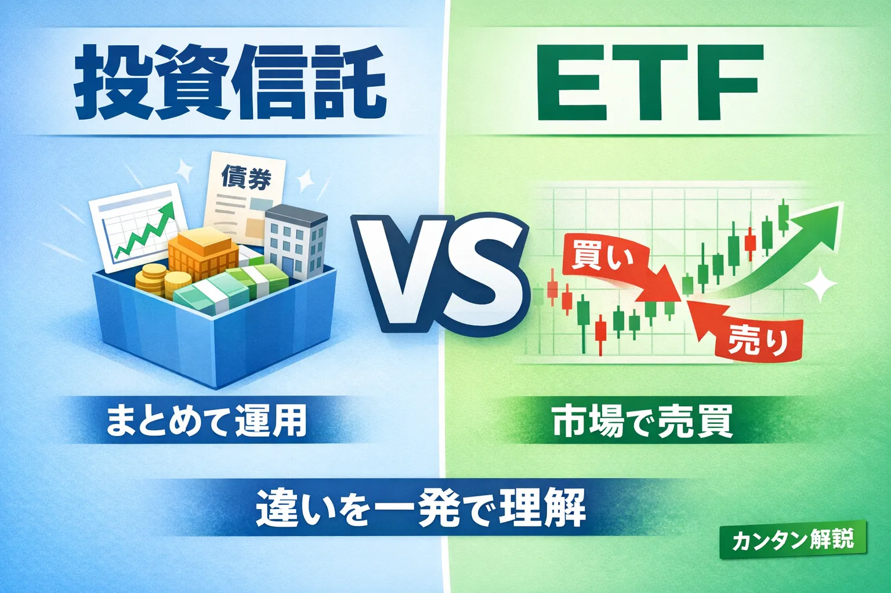

投資信託とETFの違いとは？初心者向けにわかりやすく解説
投資信託とETFの違いは何？初心者の疑問を解決

「投資信託とETFって何が違うの？」
「どっちを選べばいいの？」
このように、似たような言葉で違いが分かりにくいと感じる方も多いのではないでしょうか。
この記事では、投資信託とETFの違いを初心者向けにやさしく整理し、それぞれの特徴や選び方をわかりやすく解説します。
基本を押さえて、自分に合った投資スタイルを見つけていきましょう。
投資信託とETFの違いを一言でまとめると
- 投資信託：運用を任せる「おまかせ型」
- ETF：株のように売買できる「市場型」
- どちらも分散投資がしやすい商品
- 違いは主に「買い方」と「コスト」
投資信託とETFは、どちらも複数の資産にまとめて投資できる商品です。
ただし、投資信託は金融機関を通じて購入し、運用も任せるスタイルなのに対し、ETFは株と同じように市場で売買できる点が大きな違いです。
「手軽に積立したいか」「自分でタイミングを見て売買したいか」で向き不向きが分かれやすいのが特徴です。
投資信託とETFの仕組みの違い
- 投資信託は1日1回の価格で取引
- ETFはリアルタイムで売買できる
- どちらも指数に連動する商品が多い
投資信託は、1日に1回決まる基準価額で売買されます。
そのため、細かいタイミングを気にせず積立しやすいのが特徴です。
一方でETFは、株式市場でリアルタイムに価格が変動します。
株と同じように指値注文なども可能で、柔軟に取引できます。
どちらも日経平均やS&P500などの指数に連動する商品が多く、分散投資の入り口として使われることが多いです。
手数料・コストの違い
- ETFは信託報酬が比較的低い傾向
- 投資信託は購入手数料がかかる場合あり
- 長期ではコスト差が影響しやすい
一般的にETFは信託報酬（運用コスト）が低めに設定されていることが多いです。
一方で投資信託は、商品によって購入時手数料がかかる場合がありますが、最近ではノーロード（無料）も増えています。
長期投資ではコストの差が積み重なるため、選ぶ際は手数料も確認しておくと安心です。
どっちを選ぶべき？向いている人の違い
- 投資信託：初心者・積立投資向き
- ETF：中級者・自分で売買したい人向き
- ライフスタイルで選ぶのが大切
投資信託は、毎月コツコツ積立したい人や、投資に時間をかけたくない人に向いています。
ETFは、価格を見ながら売買したい人や、コストを抑えたい人に適しています。
どちらが正解というわけではなく、自分の目的や性格に合うかどうかで選ぶことが重要です。
あわせて読みたい関連記事

証券口座の比較はこちら
投資信託やETFを始めるには証券口座が必要です。
手数料や使いやすさを比較して、自分に合う口座を選びましょう。
よくある質問（FAQ）

-
Q. 投資信託とETFはどちらが初心者向けですか？
一般的には、積立がしやすい投資信託の方が初心者向けとされています。ただしETFも仕組みを理解すれば利用できます。 -
Q. ETFは投資信託と何が違うのですか？
ETFは株のように市場で売買できる点が特徴です。投資信託は1日1回の価格で取引されます。 -
Q. 投資信託とETFは両方持つべきですか？
必ずしも両方持つ必要はありませんが、目的に応じて使い分けることで効率的な運用ができる場合もあります。 -
Q. ETFは少額から始められますか？
ETFは株と同様に1口単位で購入するため、銘柄によって必要資金は異なります。少額投資対応の証券会社もあります。
注意事項
- 本記事は情報提供を目的としています
- 特定の商品を推奨するものではありません
- 投資には元本割れのリスクがあります
投資信託やETFは分散投資しやすい商品ですが、価格は変動するため損失が出る可能性もあります。
実際に投資を行う際は、商品内容やリスクを確認し、必ずご自身の判断で行うようにしてください。